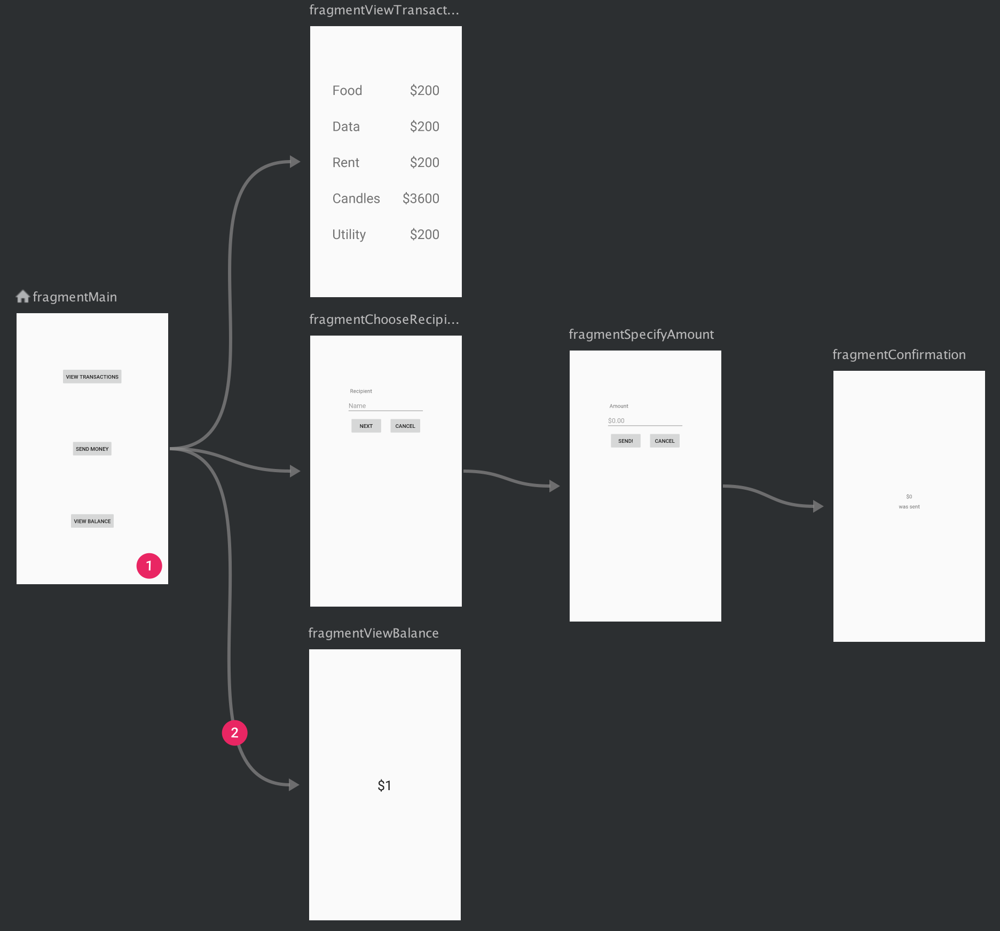

Навигация в Android-приложении. Часть 3. Начало работы с Navigation Component.
В этом уроке мы рассмотрим, как настроить и работать с Android Navigation Component. Android Navigation Component требует Android Studio 3.3 или выше и Java 8+.Для добавления поддержки навигации в ваш проект включите следующие зависимости в файл build.gradle вашего приложения:
Создайте Navigation graph
Навигация происходит между destinations в вашем приложении, то есть между любыми частями приложения, к которым пользователи могут переходить. Эти места назначения связаны между собой с помощью actions.Граф навигации - это файл ресурсов, который содержит все ваши места назначения и действия. Граф представляет все пути навигации в вашем приложении.
На рисунке 1 показано визуальное представление графа навигации для примерного приложения, содержащего шесть мест назначения, связанных пятью действиями. Каждое место назначения представлено миниатюрой предварительного просмотра, а связывающие действия представлены стрелками, показывающими, как пользователи могут переходить от одного места назначения к другому.

1 - Места назначения представляют различные области контента в вашем приложении.
2 - Действия - это логические связи между вашими местами назначения, которые представляют пути, по которым могут перемещаться пользователи.
Чтобы добавить граф навигации в ваш проект, выполните следующие действия:
1) В окне "Проект" щелкните правой кнопкой мыши на директории "res" и выберите "New" > "Android Resource File". Появится диалоговое окно "New Resource File".
2) В поле "File name" введите имя, например "nav_graph".
3) В раскрывающемся списке "Resource type" выберите "Navigation", затем нажмите "OK".
При добавлении первого графа навигации Android Studio создает директорию ресурсов навигации внутри директории "res". Эта директория содержит файл ресурса графа навигации (например, "nav_graph.xml").
Navigation Editor
После добавления графа, Android Studio открывает его в редакторе навигации (Navigation Editor). В редакторе навигации вы можете визуально редактировать графы навигации или непосредственно редактировать соответствующий XML-код.1 - Панель "Места назначения" (Destinations panel): Показывает ваш хост навигации и все места назначения, которые в данный момент находятся в редакторе графа.
2 - Редактор графа (Graph Editor): Содержит визуальное представление вашего графа навигации. Вы можете переключаться между режимом "Дизайн" (Design) и подлежащим XML-представлением в режиме "Текст" (Text).
3 - Атрибуты (Attributes): Показывает атрибуты для текущего выбранного элемента в графе навигации.
Щелкните вкладку "Текст" (Text), чтобы увидеть соответствующий XML-код, который должен выглядеть примерно следующим образом:
Элемент navigation является корневым элементом графа навигации. При добавлении мест назначения и связывающих действий в граф, вы можете видеть соответствующие элементы destination и action как дочерние элементы здесь. Если у вас есть вложенные графы, они отображаются в виде дочерних элементов navigation.
Добавление NavHost в активность
Один из основных компонентов Navigation - это Navigation host. Navigation host представляет собой пустой контейнер, в котором места назначения заменяются при навигации пользователя по вашему приложению.Navigation host должен реализовываться от NavHost. Реализация NavHost по умолчанию в Navigation - NavHostFragment, который обрабатывает замену фрагментов-мест назначения.
Примечание: Компонент Navigation предназначен для приложений, в которых есть одна главная активность с несколькими фрагментами-местами назначения. Главная активность связана с графом навигации и содержит NavHostFragment, который отвечает за замену мест назначения по мере необходимости. В приложении с несколькими активностями-местами назначения каждая активность имеет свой собственный граф навигации.
Добавление NavHostFragment через XML
Приведенный ниже XML-пример показывает использование NavHostFragment в основной активности приложения:
Обратите внимание на следующее:
- Атрибут android:name содержит имя класса вашей реализации NavHost.
- Атрибут app:navGraph связывает NavHostFragment с графом навигации. Граф навигации определяет все места назначения в этом NavHostFragment, к которым пользователи могут переходить.
- Атрибут app:defaultNavHost="true" гарантирует, что ваш NavHostFragment перехватывает системную кнопку "Назад". Обратите внимание, что может быть только один NavHost по умолчанию. Если у вас есть несколько хостов в одном макете (например, макеты с двумя панелями), убедитесь, что указан только один NavHost по умолчанию.
Добавление места назначения в граф навигации
Вы можете создать место назначения из существующего фрагмента или активности. Вы также можете использовать редактор навигации для создания нового места назначения или создания заполнителя, который затем можно заменить фрагментом или активностью.В этом примере давайте создадим новое место назначения. Чтобы добавить новое место назначения с помощью редактора навигации, выполните следующие действия:
В редакторе навигации щелкните значок Создать новое место назначения , а затем выберите Создать новое место назначения. В открывшемся диалоговом окне Создание нового компонента Android создайте свой фрагмент. Дополнительную информацию о фрагментах см. в документации по фрагментам. Вернитесь в редактор навигации и обратите внимание, что Android Studio добавил это место назначения в граф.
На рисунке 3 показан пример места назначения и заполнителя.
Рисунок 3. destination и placeholder
Анатомия destination
Для выбранного места назначения обратите внимание на следующие атрибуты в панели атрибутов:Поле "Type" указывает, реализовано ли место назначения в виде фрагмента, активности или другого пользовательского класса в вашем исходном коде.
Поле "Label" содержит читаемое пользователем имя места назначения. Это может быть отображено в пользовательском интерфейсе, например, если вы связываете NavGraph с панелью инструментов, используя метод setupWithNavController(). Поэтому рекомендуется использовать ресурсные строки для этого значения.
Поле "ID" содержит идентификатор места назначения, который используется для ссылки на место назначения в коде.
В выпадающем списке "Class" отображается имя класса, связанного с местом назначения. Вы можете нажать на этот выпадающий список, чтобы изменить связанный класс на другой тип места назначения.
Щелкните вкладку "Text", чтобы отобразить XML-представление вашего графа навигации. XML содержит те же атрибуты id, name, label и layout для места назначения, как показано ниже:
Назначение начального экрана
Начальный экран - это первый экран, который пользователи видят при открытии вашего приложения, и последний экран, который они видят при выходе из приложения. В редакторе навигации значок домика используется для обозначения начального экрана.Как только у вас есть все ваши экраны (дестинации), вы можете выбрать начальный экран, выполнив следующие действия:
В режиме "Дизайн" щелкните на экране, который вы хотите установить в качестве начального. Он будет выделен.
Нажмите кнопку "Назначить начальную дестинацию". Кнопка представлена значком домика на панели инструментов редактора навигации. Кроме того, вы можете щелкнуть правой кнопкой мыши на экране и выбрать "Установить как начальную дестинацию" в контекстном меню.
После назначения начальной дестинации рядом с выбранным экраном в редакторе графа появится значок домика, указывающий, что это начальный экран вашего приложения.
Помните, что начальный экран - это первый экран, который пользователи видят при открытии приложения, и он также является экраном, на который они возвращаются, нажимая системную кнопку "Назад" с любого другого экрана вашего приложения."
Соединение дестинаций
Действие (action) представляет собой логическую связь между дестинациями. Действия представлены в графе навигации в виде стрелок. Действия обычно соединяют одну дестинацию с другой, но вы также можете создавать глобальные действия, которые позволяют перейти к определенной дестинации из любой части вашего приложения.С помощью действий вы представляете различные пути, которые пользователи могут пройти через ваше приложение. Однако, чтобы фактически перейти к дестинациям, вам все равно необходимо написать код для осуществления навигации. Это будет рассмотрено в разделе "Переход к дестинации" позже в данном руководстве.
Вы можете использовать редактор навигации, чтобы соединить две дестинации, выполнив следующие действия:
Вкладка "Дизайн", наведите курсор на правую сторону дестинации, от которой вы хотите, чтобы пользователи перешли. Появится круг на правой стороне дестинации, как показано на рисунке 4.
Рисунок 4. Дестинация с кругом соединения
Щелкните и удерживайте кнопку мыши, перетащите курсор на дестинацию, к которой вы хотите, чтобы пользователи перешли, и отпустите кнопку мыши. Линия между двумя дестинациями представляет собой действие, как показано на рисунке 5.
Рисунок 5. Соединение дестинаций с помощью действия
Щелкните на стрелке, чтобы выделить действие. В атрибутах отображаются следующие значения:
Поле "Type" содержит "Action".
Поле "ID" содержит идентификатор для действия.
Поле "Destination" содержит идентификатор фрагмента или активности, которую представляет дестинация.
Переключитесь на вкладку "Text", чтобы перейти к XML-представлению. Теперь в исходной дестинации появляется элемент "action". Действие имеет свой идентификатор и атрибут "destination", содержащий идентификатор следующей дестинации, как показано в примере ниже:
В вашем графе навигации действия представлены элементами action. Как минимум, действие содержит свой собственный идентификатор (ID) и идентификатор (ID) дестинации, к которой пользователь должен быть перенаправлен. Для перехода к конкретной дестинации используется NavController, объект, который управляет навигацией внутри NavHost. Каждый NavHost имеет свой собственный NavController. Вы можете получить NavController с помощью одного из следующих методов:
Kotlin:
Fragment.findNavController()
View.findNavController()
Activity.findNavController(viewId: Int)
При создании NavHostFragment с использованием FragmentContainerView или при добавлении NavHostFragment в вашу активность с помощью FragmentTransaction, попытка получения NavController в методе onCreate() активности с помощью Navigation.findNavController(Activity, @IdRes int) приведет к ошибке. Вместо этого вы должны получить NavController напрямую из NavHostFragment.
Безопасность типов с использованием Safe Args
Для обеспечения безопасности типов при переходе между дестинациями рекомендуется использовать плагин Safe Args для Gradle. Этот плагин генерирует простые классы объектов и строителей, которые обеспечивают безопасную навигацию и передачу аргументов между дестинациями.Примечание: Для других способов навигации см. Раздел Navigate to a destination.
Чтобы добавить Safe Args в ваш проект, включите следующий класспэт в файл build.gradle верхнего уровня:
Вы также должны применить один из двух доступных плагинов.
Для генерации кода на языке Java, подходящего для модулей на языке Java или смешанных модулей Java и Kotlin, добавьте следующую строку в файл build.gradle вашего приложения или модуля:
Кроме того, для генерации кода на языке Kotlin, подходящего только для модулей на языке Kotlin, добавьте:
Вам нужно добавить `android.useAndroidX=true` в файл `gradle.properties`, как указано в руководстве по переходу к AndroidX.
После включения Safe Args плагин генерирует код, который содержит классы и методы для каждого определенного действия. Для каждого действия Safe Args также генерирует класс для каждого исходного пункта назначения, откуда исходит действие. Сгенерированное имя класса является комбинацией имени класса исходного пункта назначения и слова "Directions". Например, если пункт назначения называется SpecifyAmountFragment, то сгенерированный класс будет называться SpecifyAmountFragmentDirections. Сгенерированный класс содержит статический метод для каждого определенного действия в исходном пункте назначения. Этот метод принимает любые определенные параметры действия в качестве аргументов и возвращает объект NavDirections, который можно передать в метод navigate().
В качестве примера предположим, что у нас есть навигационная графика с одним действием, которое соединяет исходный пункт назначения SpecifyAmountFragment с получающим пунктом назначения ConfirmationFragment.
Safe Args генерирует класс SpecifyAmountFragmentDirections с одним методом actionSpecifyAmountFragmentToConfirmationFragment(), который возвращает объект NavDirections. Этот возвращаемый объект NavDirections может быть передан непосредственно в метод navigate(), как показано в следующем примере:
Навигация в Android-приложении. Часть 2. Navigation Component.
Навигация - взаимодействия, которые позволяют пользователям перемещаться между различными частями контента внутри вашего приложения, а также возвращаться из них. Android Jetpack Navigation Component помогает вам реализовать навигацию, начиная от простых нажатий кнопок до более сложных шаблонов, таких как панель приложения и выдвижная навигационная панель. Компонент навигации также обеспечивает последовательный и предсказуемый пользовательский опыт, придерживаясь установленного набора принципов.Navigation Component состоит из трех ключевых частей, которые описаны ниже:
- Граф навигации: XML-ресурс, который содержит всю связанную с навигацией информацию в одном централизованном месте. Он включает все отдельные области контента в вашем приложении, называемые местами назначения, а также возможные пути, которые пользователь может пройти в вашем приложении.
- NavHost: Пустой контейнер, который отображает места назначения из вашего графа навигации. Navigation Component содержит реализацию NavHost по умолчанию - NavHostFragment, который отображает фрагменты в качестве мест назначения.
- NavController: Объект, который управляет навигацией внутри NavHost. NavController управляет переключением содержимого мест назначения в NavHost при перемещении пользователей по вашему приложению. При навигации в вашем приложении вы сообщаете NavController, что хотите переместиться либо по определенному пути в графе навигации, либо непосредственно к определенному месту назначения. Затем NavController отображает соответствующее место назначения в NavHost.
- Управление транзакциями фрагментов.
- Корректная обработка действий "Вверх" и "Назад" по умолчанию.
- Стандартизированные ресурсы для анимаций и переходов.
- Реализация и обработка глубокой ссылки.
- Включение шаблонов пользовательского интерфейса навигации, таких как выдвижные панели навигации и нижняя навигация, с минимальными дополнительными настройками.
- Safe Args - плагин Gradle, который обеспечивает безопасность типов при навигации и передаче данных между местами назначения.
- Поддержка ViewModel - вы можете ограничить область видимости ViewModel для графа навигации, чтобы обмениваться данными, связанными с пользовательским интерфейсом, между местами назначения графа. Кроме того, вы можете использовать редактор навигации в Android Studio версии 3.3 или выше для просмотра и редактирования ваших графов навигации.
02.07.2023
Навигация в Android-приложении. Часть 1. Принципы навигации в Android-приложении.
1.Фиксированный StartDestination
У каждого приложения, которое вы создаете, есть фиксированное начальное место назначения(StartDestination). Это первый экран, который пользователь видит при запуске вашего приложения из лончера. Это место назначения также является последним экраном, который пользователь видит при возвращении в лончер после нажатия кнопки "Назад". Также приложение может иметь одноразовую настройку или серию экранов входа в систему. Эти условные экраны не должны рассматриваться как начальные места назначения, поскольку пользователи видят эти экраны только в определенных случаях.2.Состояние навигации представляется в виде стека destinations.
Когда ваше приложение запускается впервые, создается новый task для пользователя, и приложение отображает свое начальное место назначения. Это становится базовым местом назначения, известным как стек возврата, и является основой для состояния навигации вашего приложения. Верхним элементом стека является текущий экран, а предыдущие места назначения в стеке представляют историю, где вы уже побывали. Внизу стека всегда находится начальное место назначения приложения.Операции, которые изменяют стек возврата, всегда выполняются с верхним элементом стека, либо добавляя новое место назначения на вершину стека, либо удаляя верхний элемент из стека. Переход на место назначения добавляет это место назначения на вершину стека.
Navigation component управляет всем порядком элементов в стеке возврата за вас, хотя вы также можете управлять стеком возврата самостоятельно.
3.Кнопки "Вверх"(Up/Pop button) и "Назад"(System Back button) идентичны в рамках task вашего приложения.
Кнопка "Назад" появляется в навигационной панели системы внизу экрана и используется для навигации в обратном хронологическом порядке через историю экранов, с которыми пользователь недавно работал. Когда вы нажимаете кнопку "Назад", текущее место назначения удаляется из верхней части стека возврата, и затем вы переходите к предыдущему месту назначения.Кнопка "Вверх" появляется в панели приложения вверху экрана. В рамках task вашего приложения кнопки "Вверх" и "Назад" должны вести себя идентично.
4.Кнопка "Вверх" никогда не выходит из вашего приложения.
Если пользователь находится на начальном экране вашего приложения, то кнопка "Вверх" не отображается, потому что кнопка "Вверх" никогда не выходит из приложения. Однако кнопка "Назад" отображается и выполняет выход из приложения.Когда ваше приложение запускается с использованием deeplink из другого приложения, кнопка "Вверх" переносит пользователей обратно в task вашего приложения через моделирование стека возврата, а не к приложению, вызвавшему глубокую ссылку. Однако кнопка "Назад" действительно возвращает вас к другому приложению.
5.Глубокая ссылка (deep linking) имитирует ручную навигацию.
Будь то глубокая ссылка или ручное перемещение к конкретному месту назначения, вы можете использовать кнопку "Вверх" для навигации через места назначения обратно к начальному месту назначения.При глубокой ссылке на место назначения в рамках задачи вашего приложения, любой существующий стек возврата для задачи вашего приложения удаляется и заменяется глубоко связанным стеком возврата.
Компонент навигации поддерживает глубокие ссылки и автоматически создает реалистичный стек возврата для вас при переходе на любое место назначения в вашем графе навигации.
25.06.2023
Промежуточные итоги работы по технике "Форсаж" за прошедшую неделю
- Количество невыполненных задач в день сократилось с 3-5 до 0-2
- Повысилось качество планирования - ставлю такие задачи и в таком объеме, который совершенно точно смогу выполнить
- Сложные задачи, требующие неопределенного количества времени и ресурсов, декомпозирую на более мелкие и формулирую таким образом, чтобы было однозначно ясно, что нужно делать и каков результат успешного выполнения
Понял, что на меня отлично работают дедлайны по времени. Буду пользоваться данной техникой, чтобы выполнять задачи в правильном приоритете, не отвлекаясь на что-то лишнее.
Также данный способ должен быть эффективен для формирования правильных привычек, поэтому планирую с помощью него развить в себе пунктуальность, так как с ней у меня проблемы. Результаты будут в одном из следующих отчетов.
04.06.2023
Стратегическая цель
Стратегическая цель на текущий момент - стать ведущим разработчиком Андроид-приложений в компании АЛИДИ.
Действия, которые я предпринимаю для достижения цели:
- Развиваю свой блог
- Берусь за сложные задачи и стараюсь выполнить их безупречно
- Разрабатываю инициативы для улучшения работы команды
- Прохожу курсы по программированию для повышения своего скилла
- Помогаю другим разработчикам в решении их задач
28.05.2023
Работа по технике "Форсаж"
С сегодняшнего дня буду организовывать свою жизнь в соответствии с техникой "Форсаж", которая предполагает постановку задач с конкретным указанием выигрыша и проигрыша.
Пример постановки задачи:
Выложить пост в блог в воскресенье с 10:00 до 13:00.
Выполнение задачи - отдых и проведение времени с семьей весь оставшийся день.
Невыполнение задачи - перевод 500 руб. в благотворительный фонд.
Подобным образом буду планировать каждую свою задачу.
21.05.2023
ТОП-3 вопроса с собеседований по Jetpack Compose
1. Что такое Jetpack Compose и в чем его преимущества?
Jetpack Compose — это современный набор инструментов для создания пользовательского интерфейса Android с использованием Kotlin.К его преимуществам относятся:
- Независимость от конкретных релизов платформы. Все фичи, багфиксы и улучшения доступны одновременно для всех версий Android. Например, если в тулките появится новая UI-фича, ее можно использовать и на Android 12, и на Android 11 — интерфейс будет выглядеть нативно на обеих версиях.
- Kotlin-only. Вся работа с UI происходит в одном Kotlin-файле, никаких xml
- Композитный подход: Наследованию – нет, композиции – да. Каждый UI-компонент представляет собой обычную composable-функцию, отвечающую за ограниченный функционал, никакой лишней логики как у View.java на 30 тысяч строк кода.
- Обратная совместимость: Для использования Compose не требуется начинать проект с нуля. Имеется возможность как его встраивания (с помощью ComposeView) в имеющуюся xml-вёрстку, так и наоборот.
- Кроссплатформенность: Изначально Jetpack Compose создавался для написания нативного UI в приложениях на Android. Но тулкит полюбился разработчикам и развивается в сторону кроссплатформенной разработки параллельно с Kotlin Multiplatform.
- Декларативный UI - когда вместо того, чтобы манипулировать интерфейсом, вы описываете, каким он должен быть.
2. Из чего состоит пользовательский интерфейс Jetpack Compose?
Пользовательский интерфейс состоит из Composable функций, описывающих внешний вид любого компонента UI.
3. Что такое State в Jetpack Compose?
State в Jetpack Compose — это значение, которое может меняться с течением времени и запускать перерисовку пользовательского интерфейса при его изменении.Как был создан этот блог
1. На главной странице во вкладке "Repositories" кликаем на кнопку "New". Создаем новый репозиторий, делаем его публичными ставим галочку на "Add Readme".Файл Readme нужен для того, чтобы в дальнейшем сделать профиль на github более привлекательным для других пользователей и работодателей.

2. Далее открываем созданный репозиторий, идем во вкладку Add file -> create new file. Открывается новое окно для создания и редактирования файла. Называем файл именем
"index.html" и создаем начальную разметку. После создания разметки нажимаем "Commit changes", делаем коммит в main и возвращаемся на главную страницу репозитория.

3. Добавим нашему проекту файл со стилями. По тому же алгоритму создаем новый файл, но теперь уже в названии вводим "css/". Благодаря данному действию у нас будет создана новая папка, в которой мы будем хранить
стили нашего блога. В этом же месте создаем файл с названием "style.css" и пишем код для задания шрифтов и тп. Коммитим в main по тому же алгоритму.
4. Далее идем в Settings -> Pages, во вкладке source выбираем "Deploy from a branch" и выбираем ветку, из которой github создаст в итоге страницу нашего блога.
В нашем случае это ветка main. Нажимаем Save.

5. Обновляем страницу и видим ссылку на наш блог.

6. Вот и все! Наш блог создан. Это был самый простой способ создания безо всяких дополнительных IDE. Конечно, дальнейшее редактирование лучше выполнять в специальных средах
разработки.
О себе
Всем привет! Я Android-разработчик, активно изучаю мобильную разработку с 2019 года. Этот блог будет посвящен интересным и полезным инструментам и технологиям для разработчиков.